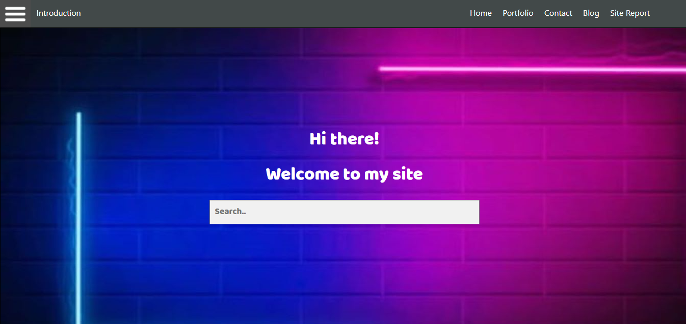

Making Home Page
Home page is the face of the website. It must always be interactive enough and user friendly. This blog is about how to make a homepage
and my jorney of making homepage for this project. Follow me to my journey of making interactive homepage.
-1 March 2022,
Making Portfolio Page
Making a portfolio page is very important since it helps to showcase your work to your potential customers.I have used many placeholders
to showcase my work and skills. Follow me to my journey of making interactive portfolio page
-2nd March 2022,
Making Contact Page
Contact page is a must have in a portfolio page. If a customer wants to contact you for a gig then you must provide them a way to.
I have added basic form where anyone can fillup inorder to contact me. Follow me to my jorney of making contact page.
-3rd March 2022,